Facet TD · HUD reskin study
Every HUD part, one at a time
The HUD as built today, split into 17 parts. Each part shows its current look on desktop and
phone, everything it has to show or do, and its known problems. We pick a part, agree on its
new look, and mark it done here.
Captured 30 Oct 2026 from main @ da21e57 · seed 5 · 1440×900 and 390×844 · Chromium
Where each part sits
Keep step, gem 1 selected. Not visible in this frame: DPS list (13) appears under the menu
during waves; tooltip (10) and targeting banner (11) float over the command card; the recipe
book (14) opens on the right; dialogs 15–17 cover the board.
Suggested order
Kit Type scale, colours, panel frame, button and bar styles. Every part reuses these, so we
settle them first.
Command card (5–11) The most-used part: one frame with five contents, the tooltip and the targeting
banner.
Top bar (2, 3, 12 footer) Round clock, run stats, and castle HP and gold in one status bar that survives every
width.
Draft slots (4) The keep decision. Reskin once the card's gem style is set.
Showcase, DPS, recipes (12–14) Side panels that share the kit.
Menus and screens (1, 15–17) Settings, game menu, end card and title.
Parts
01
Menu button and settings
top left · Hud.tsx · .tools, #settings Current
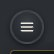
closed
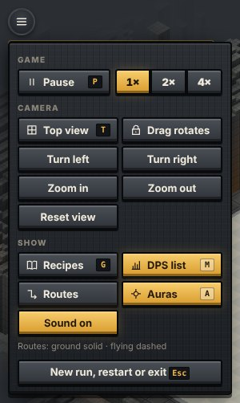
desktop, open
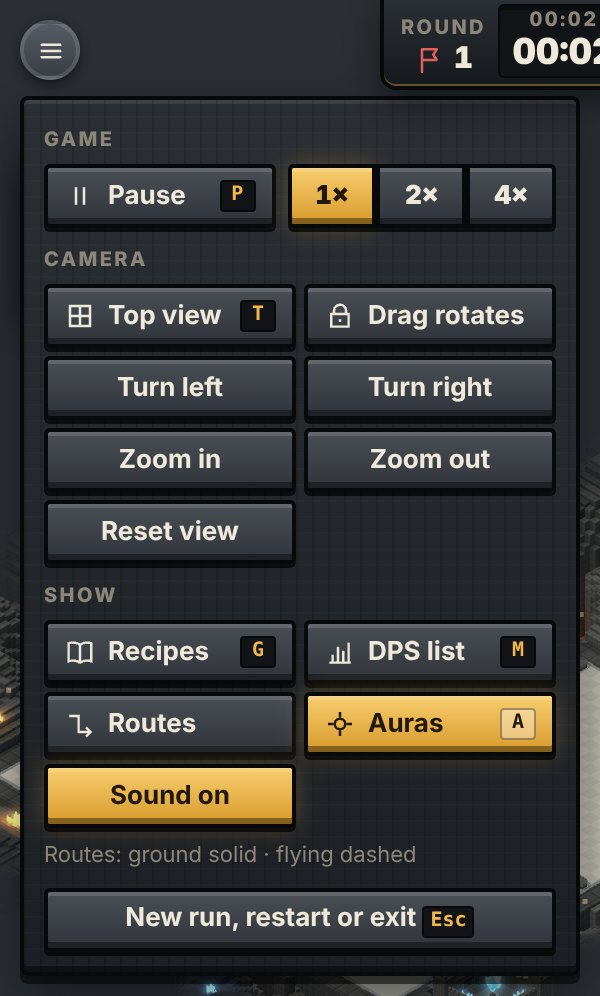
phone, open
Must show
Game: Pause P , speed 1× / 2× / 4× 1 –3
Camera: Top/Isometric T , Drag rotates, Turn left/right, Zoom in/out, Reset
view
Show: Recipes G , DPS list M , Routes, Auras A , Sound;
Hero loadout H (hidden, WIP)
Route legend; “New run, restart or exit” Esc
Problems now
P2
Button is 34 px on desktop, 30 px on phone; target is 48.
P3
Toggles and one-shot actions (Turn, Zoom) look the same; on/off reads only by gold
fill.
P2
On phone the open panel covers the round clock.
P3
Speed is two clicks away during a wave; it may belong on the top bar.
02
Round clock
top centre · Hud.tsx RoundClock · .round-clock Current
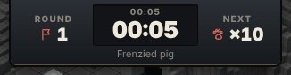
build
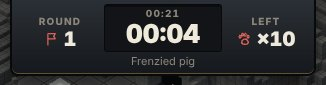
wave
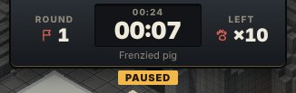
paused
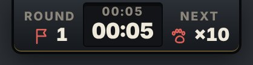
phone
Must show
Round number (∞N in endless)
Run time (small) and round time (large)
“Next” or “Left” with creep count; next creep name
Paused or Enraged flag
Problems now
P1
Castle HP and gold are not here, and the panels that hold them vanish at ≤900 px. The
top bar is the natural home for both.
P3
Two unlabelled clocks; labels at 10 px. Creep name repeats in the showcase.
03
Run stats
top right · Hud.tsx StatsPanel · .stats-panel Current
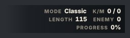
desktop (hidden at ≤900 px)
Must show
Mode (Classic / Facet)
Kills / leaks, maze length, creeps on board, wave progress %
Problems now
P2
No panel behind it; sits on the cave scenery. Labels 10 px.
P3
“K/M” and “Length” explained only in hover tooltips.
04
Draft slots
top left, build only · Hud.tsx DraftSlots · .draft Current
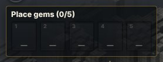
placing (0/5)
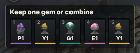
keep or combine
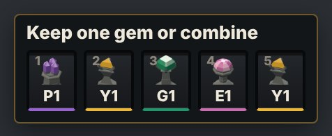
phone
Must show
Title: “Place gems (n/5)”, then “Keep one gem or combine”
Per slot: number, gem model icon, code (P1, Y1…), type colour, “can combine” dot,
selected state
Empty slots disabled; clicking a filled slot selects its gem on the board
Problems now
P2
Slots 36 px wide on phone; slot numbers 9 px.
P3
Empty slots barely visible; no hint of how to place the next gem.
05
Command card: builder
bottom centre, nothing selected · CommandCard.tsx HeroCard · .card Current
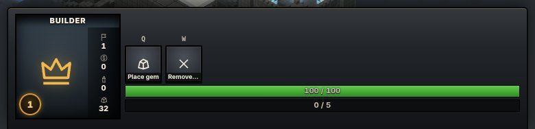
desktop
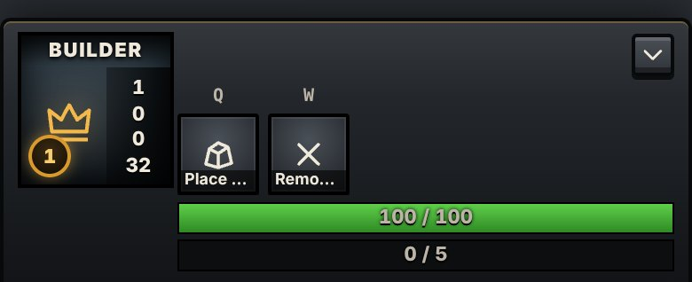
phone
The frame (shared by 05–09)
Portrait: name, art, level disc, four stats down the right edge
Status effects row; one line of commands with hotkey above, icon, label, cooldown,
primary/glow/disabled states
Two bars (health-style green, mana-style dark) and a note line for reasons and
refusals
Close Esc ; collapse on tablet and phone
Builder content
Build level, gold, towers, stones
Place gem Q , Remove stone W ; hero skills E D F R (WIP)
Bars: castle HP, gems placed
Problems now
P2
760 px wide with two commands; bars unlabelled; stats are icons at 9–10 px, bare
numbers on phone.
P2
Phone shows Q /W hints and cuts names to “Place …”, “Remo…”.
06
Command card: gem being placed
a draft gem selected · CommandCard.tsx CellCard Current
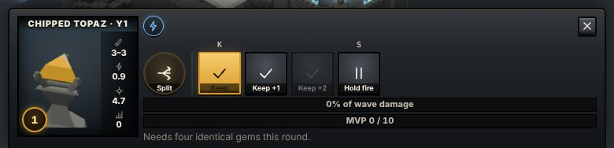
desktop · Chipped topaz
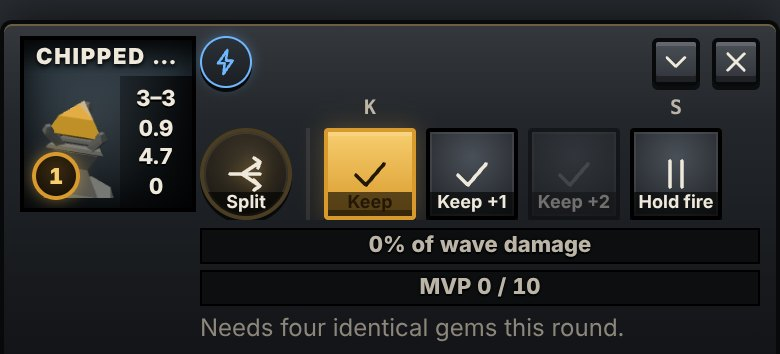
phone
Must show
Gem name, type and quality; damage, attack speed, range, kills
Ability (e.g. Split, Shred) as a passive slot
Keep K , Keep +1, Keep +2, Combine C (when possible), Hold fire
S
Bars: share of wave damage, MVP progress; note: why an action is refused
Problems now
P2
Name truncated (“CHIPPED AMETHYS…”) at the keep decision.
P2
The label on every gold primary button (“Keep”, “Place gem”) is dark-on-dark and
unreadable.
07
Command card: tower and stone
a kept tower or a stone selected · CellCard Current
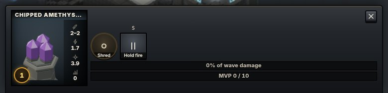
kept tower
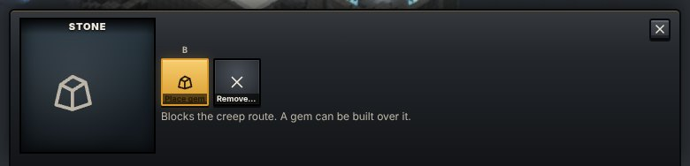
stone
Must show
Tower: as 06 plus combine options, downgrade, aim modes (WIP)
Stone: build a gem over it B , remove it, cost after early waves
Problems now
P2
Stone card is mostly empty space; one sentence of help in 13 px grey.
08
Command card: creep
a creep selected · CreepCard Current
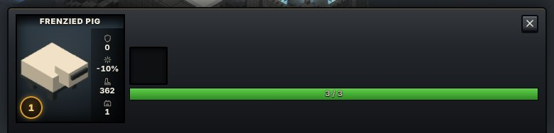
desktop · Frenzied pig
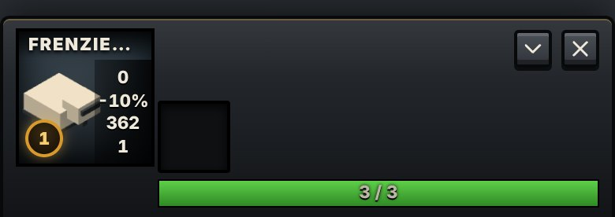
phone
Must show
Name, model, level; armor (and base), magic resist, speed, bounty
Abilities and status effects; health bar
Problems now
P2
An empty dark box sits where the ability or status should be.
09
Command card: cell and waypoint
open cell or route marker selected · CellCard Current
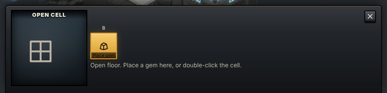
open cell
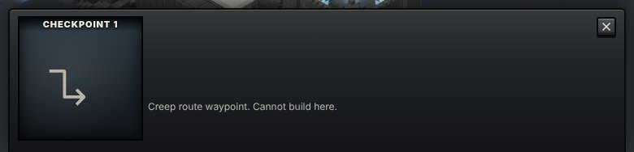
waypoint
Must show
Cell: Place gem B or the reason it is refused (would block the route, wave
running)
Waypoint: which one (S, 1–5, E) and that it cannot be built on
Problems now
P3
Full-size card for one line of text; could be a compact variant.
10
Tooltip
over any command · CommandCard.tsx Tip · .tip Current
Must show
Title, hotkey, level, description, refusal reason
Problems now
P3
Stays up after a click until the pointer moves; hover-only on touch.
11
Targeting banner
above the card while placing or removing · .targeting Current
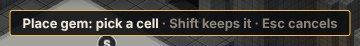
place gem
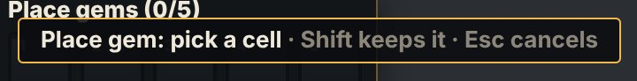
phone
Must show
What to pick, how to repeat (Shift), how to cancel (Esc, right click)
Problems now
P2
Phone gets keyboard instructions and no Cancel button, and the banner overlaps the
draft-slot title.
12
Showcase
bottom right · Showcase.tsx · .showcase Current
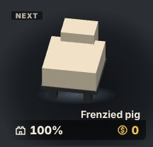
next
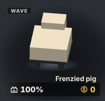
wave
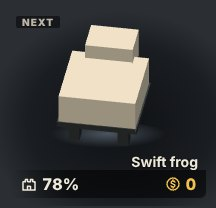
after wave (MVP tag shows only when a tower dealt damage)
Must show
Tag: Next / Wave / MVP; live 3D model on a plinth; name
Footer: castle HP %, gold
Problems now
P1
Hidden at ≤900 px, taking castle HP and gold with it.
P3
Castle shows as “78%” here and “100 / 100” on the builder card.
13
DPS list
top left during waves · DamageMeter.tsx · .dps Current
Must show
Wave number and total; per tower: icon, name, bar, damage
Problems now
P3
No panel behind it; 15 px grey over cave rock. Hidden on phone.
14
Recipes
right side · RecipeBook.tsx · .drawer, .pinned Current
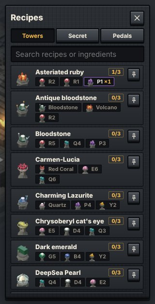
recipe book
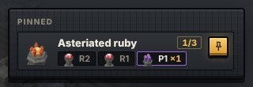
pinned
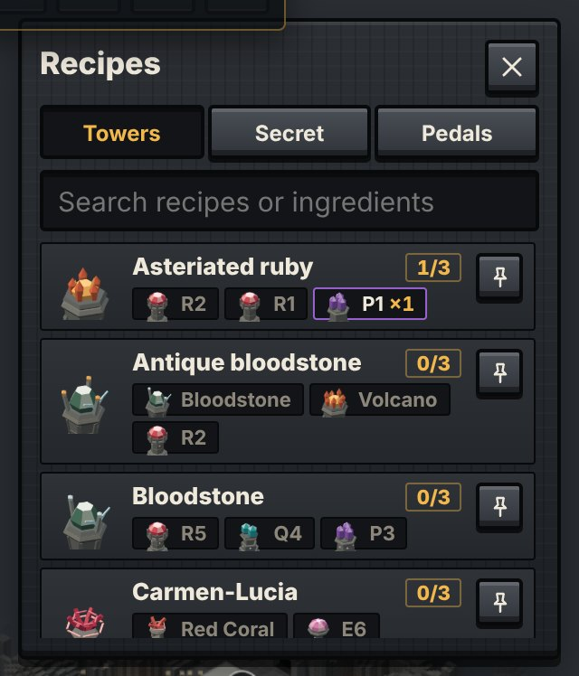
phone
Must show
Tabs: Towers, Secret, Pedals; search
Per recipe: result icon and name, owned count (1/3), ingredient chips (owned
highlighted), pin
Pinned list stays on screen; pinned ingredients glow on the board
Problems now
P2
On phone a floating card over half the board, about 3½ rows visible.
15
Game menu
modal · Menu.tsx GameMenu · dialog.menu Current
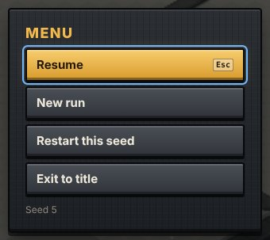
menu
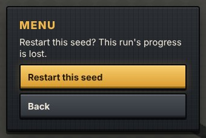
confirm
Must show
Resume Esc , New run, Restart this seed, Exit to title, seed number; confirm
before losing progress
Problems now
P3
Board stays fully visible behind it; no dim.
16
End card
modal · Hud.tsx EndCard · .end-card Current
Must show
Victory or loss, wave reached, gold, build level, Play again
Problems now
P2
Thin compared with the end-of-run summary spec in docs/art/IMPLEMENTATION.md (MVP,
kills, leaks, best towers).
17
Title screen
?title · Menu.tsx TitleScreen · .title-card Current
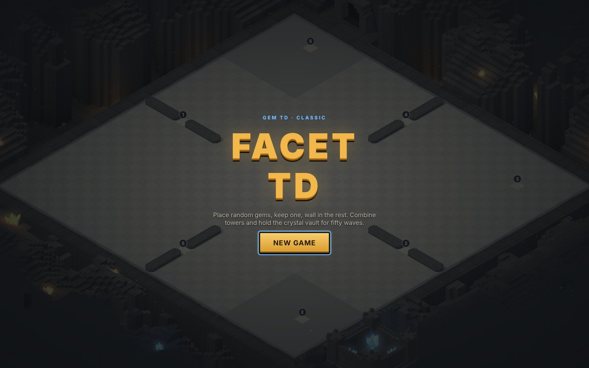
desktop
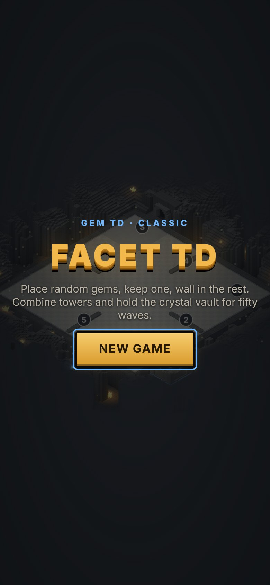
phone
Must show
Name, mode, one-line pitch, New game
Later
Mode choice (Classic / Facet), continue, settings, co-op
Not in this study
Hero loadout panel: behind ?wip, not shipped.
Creep health bars, board markers (S, 1–5, E), range rings and highlights: drawn in the 3D
scene, not the DOM HUD. Say if you want them in the reskin too.
Source: Playwright captures of the dev build. The full findings, with measurements, are in
docs/art/ux-study/README.md on branch claude/hopeful-dijkstra-jhuu7b.